Samfaina
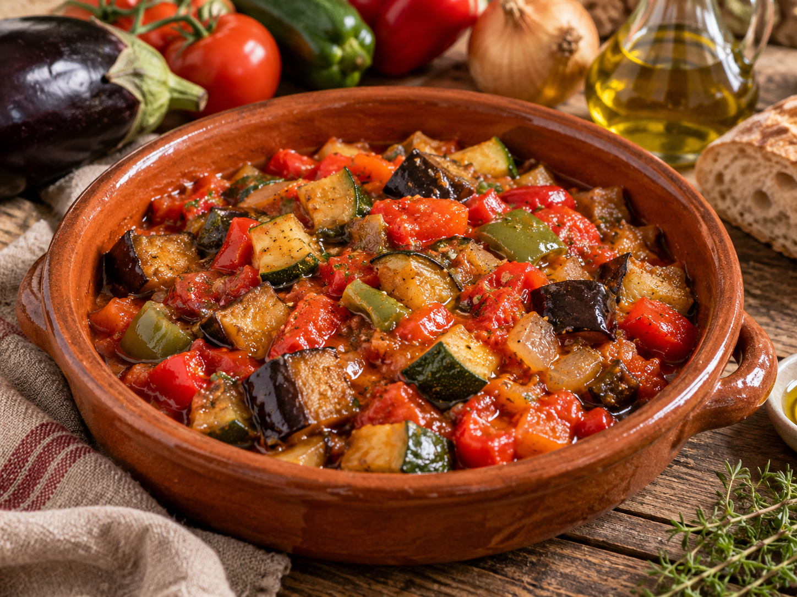
Qué es
La samfaina es un guiso de verduras típico de la cocina catalana, muy parecido al pisto o a la ratatouille francesa. Se hace a fuego lento con berenjena, calabacín, pimiento, cebolla y tomate, y el aceite de oliva le da todo el sabor. Se puede comer sola, con pan, o como acompañamiento de carnes y pescados como el bacalao.
Ingredientes
Para cuatro personas solo hacen falta verduras de temporada, aceite y un poco de paciencia:
- 1 berenjena
- 1 calabacín
- 1 pimiento rojo y 1 pimiento verde
- 1 cebolla y 1 diente de ajo
- 4 tomates maduros
- Aceite de oliva virgen extra, sal y tomillo
Preparación
El secreto de la samfaina es cocinar cada verdura en su momento y dejar que todo se haga despacio, para que se mezclen los sabores sin quedar deshecho.
- Lavar las verduras y cortarlas en dados de unos 2 cm.
- Sofreír la cebolla y el ajo en una cazuela con aceite a fuego suave.
- Añadir los pimientos y cocinar unos 10 minutos.
- Incorporar la berenjena y el calabacín, y salar.
- Añadir el tomate rallado y el tomillo.
- Tapar y dejar cocer a fuego lento unos 30 minutos, removiendo de vez en cuando.
Imágenes
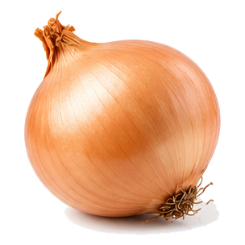
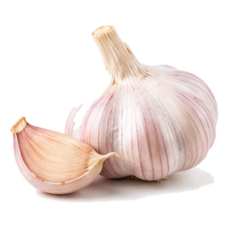
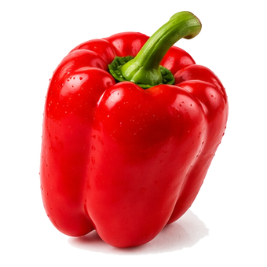
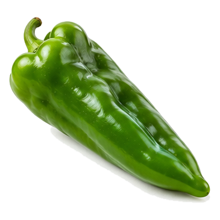
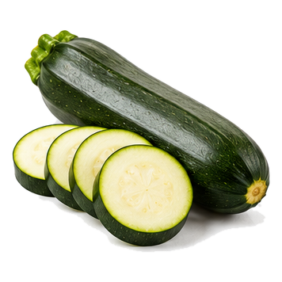
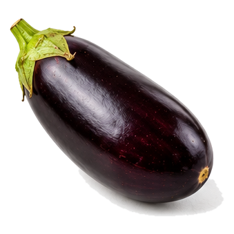
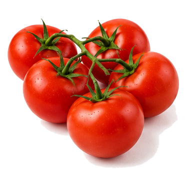
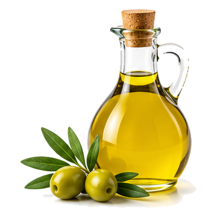
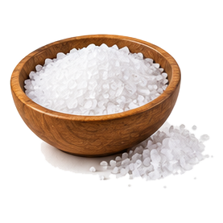
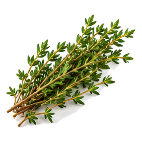
Vídeo
Vídeo en catalán: Com fer Samfaina recepta tradiciona Catalana, del canal Vicfood.